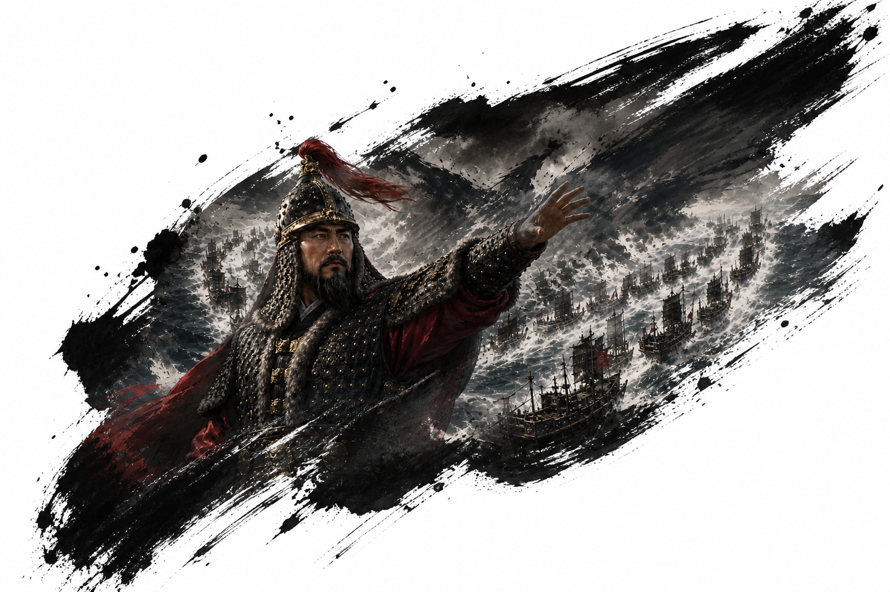
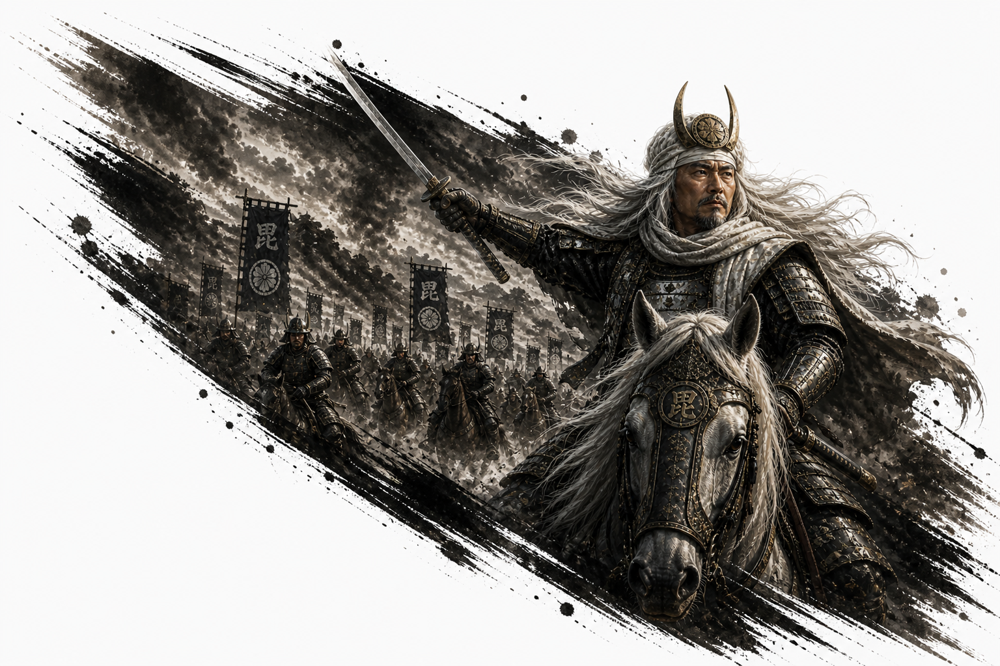
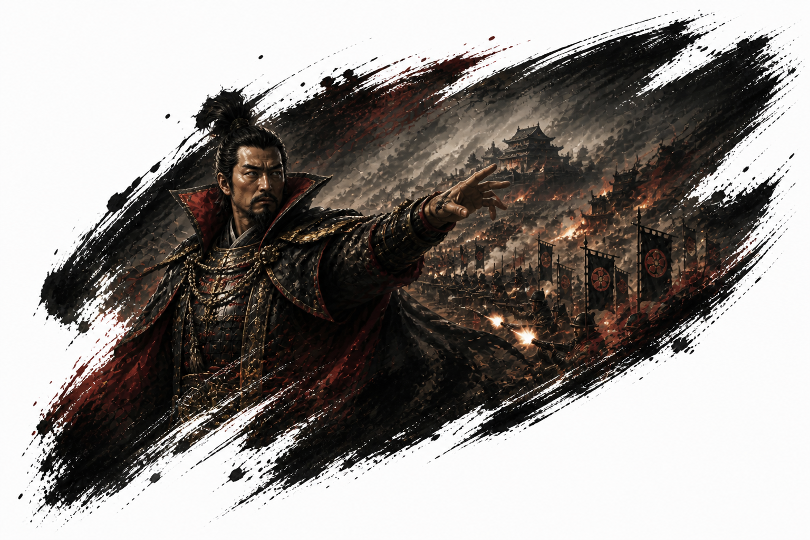
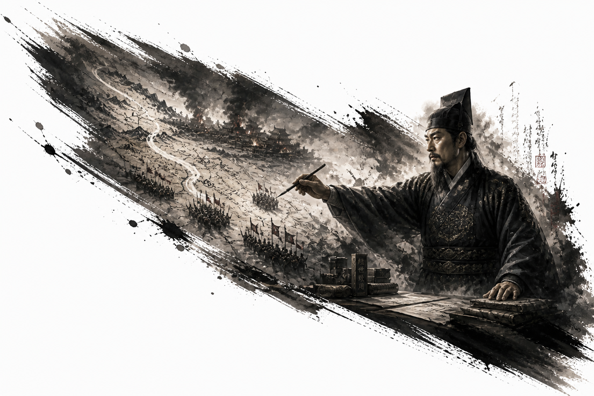

EASTWAR 개발일지 #006
전투가 살아났다 — UI를 다듬고, 영웅이 뛰쳐나왔다
2026년 5월 2일 — 5월 3일#005에서 전투 엔진의 기초를 완성했다. 이번엔 그 위에 살을 붙일 차례였다. "작동하는 게임"에서 "느껴지는 게임"으로.
전투 화면을 정돈했다
v0.2-7a — v0.2-7k처음 만든 전투 UI는 솔직히 프로토타입 티가 많이 났다. 버튼들이 제각각이고, 정보가 어디 있는지 한눈에 안 들어왔다.
원칙을 하나 정했다. 좌측은 전황 기록, 우측은 장수 정보, 하단은 명령. 이 역할 분리만 잡으면 전투가 훨씬 게임답게 정돈된다.
세부 작업들이 줄줄이 따라왔다. 명령 버튼 중앙 배치, 방향 선택 UI 개선, 이동 취소와 공격 취소를 마우스 오른쪽 클릭에 심기. 공격·특기·책략 발동 범위 표시. 그리고 HP라는 명칭을 전열로 바꿨다. 단순한 체력 수치가 아니라, 부대가 전투를 지속하는 안정도라는 의미를 담기 위해서다.
하나씩 붙여나가다 보니 어느 순간 화면이 "게임처럼" 보이기 시작했다.
전투에 손맛을 넣었다
v0.2-7L — v0.2-7o기능이 갖춰지니 다음 문제가 생겼다. 전투가 너무 빠르게 처리돼서 뭔가 허전했다.
적의 반격, 이동, 행동 사이에 딜레이를 넣었다. 처음엔 0.5초로 시작해서 0.8초, 최종적으로 1초 내외로 조율했다. 숫자 하나 바꿀 때마다 전투의 체감이 달라졌다. 같은 전투인데 템포 하나로 긴장감이 생기고 없어지고를 반복했다.
그리고 BGM을 넣었다. 월드맵과 전투, 각각 다른 곡. 음악이 들어오는 순간 게임이 완전히 다른 느낌이 됐다.
영웅이 뛰쳐나왔다 — 고유특기 컷인
v0.2-8 — v0.2-8e가장 공들인 작업이었다. 영웅이 고유특기를 쓸 때 전투판 위로 컷인 이미지가 떠오르는 시스템.
처음엔 실패했다. 이미지가 브라우저 전체를 덮어버렸다. 전투판 안에서만 뜨게 영역을 잡는 것부터 다시 했다. 크기를 줄이고, CSS 사선 배경 효과 범위를 조정하고, 위치를 튜닝했다.
이순신부터 시작해서 정도전, 노부나가, 겐신까지 네 영웅 모두에게 적용했다. 영웅마다 컷인 이미지가 다르고, 각자의 고유특기가 발동하는 순간 화면이 확 바뀐다.




전장이 넓어지고, 월드맵이 살아났다
v0.2-9 — v0.2-10전투판을 14×8 그리드로 확대했다. 더 넓은 전장, 더 다양한 전술이 가능해졌다.
그리고 월드맵에 적 턴이 생겼다. 내가 턴을 넘기면 이제 적도 움직인다. 확률적으로 적이 침공해오고, 자동전투와 직접전투 중 선택하게 된다. 적이 이기면 아군 수도가 밀린다.
드디어 게임이 "나 혼자 하는 것"에서 "맞붙는 것"이 됐다.
전투를 만들고, 다듬고, 영웅을 세웠다. 다음은 영웅의 얼굴을 전장 위에 올리는 작업이다.